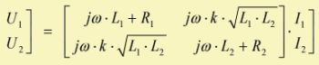

|
|
| Purpose | Technical transformer |
| Type | Network component (4 pole) |
| Domain | Electrical |
| Used in | System |
Transformer 'Any name'
Node=s=t=u=v
L1= L2=
R1= R2=
K=
This network element creates a Transformer with two windings. The primary winding is located at the poles s and t and the secondary winding at the poles u and v. The transmission characteristics of the transformer are given by:

U1 and U2 are the voltages across the primary and secondary windings. I1 and I2 are the respective currents to the transformer. L1 and L2 are the inductances and R1 and R2 their internal resistances, which can be specified optionally.
The two coils are magnetically coupled by the coupling-factor k. Here, the coupling-factor k should be specified in percent. It is not possible to specify an ideal transformer by the Transformer element. If you need ideal coupling, you would use the Coupler element. The coupling-factor therefore should have values in the range 0 < k < 100%. In practice, maximum values between 90% and 99% can be achieved. The expression k·√(L1·L2) is equal to the so-called mutual inductance M.
The transmission factor of an ideal transformer (k = 100%) is equal to:
U2/U1 = √(L2/L1) = n2/n1
with n1 and n2 primary and secondary windings, respectively.
1) Example: The primary winding is between nodes s=2 and t=0 and the secondary winding is between nodes u=3 and v=0. The primary winding has an inductance of L1=10mH and the inductance of the secondary winding is L2=1mH. The coupling factor is k=95%.
Transformer 'Tr1'
Node=2=0=3=0
K=95%
L1=10mH L2=1mH
2) Example: The primary winding has an internal resistance of R1=10ohm and the secondary winding an internal resistance of R2=0.1ohm.
With L1=10mH and L2=1mH the turn ratio is n2/n1 = 0.316.
Transformer 'Tr1'
Node=2=0=3=0
K=95%
L1=10mH R1=10ohm
L2=1mH R2=0.1ohm